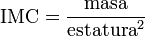

Calcule su índice de masa corporal y verifique su estado de salud en línea!
El índice de masa corporal (IMC) es una medida de asociación entre la masa y la talla de un individuo ideada por el estadístico belga Adolphe Quetelet, por lo que también se conoce como índice de Quetelet.
El indice de masa muscular se puede calcular con una sencilla formula la cual mostraremos a continuación:

Una buena forma de determinar si su peso es saludable para su estatura es calcular su índice de masa corporal (IMC). Su proveedor de atención médica y usted pueden usar su IMC para calcular la cantidad de grasa corporal que usted tiene.
Ser obeso sobrecarga al corazón y puede llevar a que se presenten graves problemas de salud. Estos incluyen:
Cardiopatía
Hipertensión arterial
Apnea del sueño
Diabetes tipo 2
Venas varicosas
Investigadores de la Escuela de Londres de Higiene y Medicina Tropical analizaron la media del IMC de 177 países usando los datos de la ONU sobre la población. La Organización Mundial de la Salud estima el peso en el mundo y altura a través de los exámenes de salud nacionales.
El IMC se usa como una herramienta de detección para identificar posibles problemas de salud de los adultos. Sin embargo, el IMC no es una herramienta de diagnóstico. Por ejemplo, una persona puede tener un alto IMC, pero para determinar si el exceso de peso es un riesgo para la salud, un proveedor de atención médica necesitará realizar evaluaciones adicionales. Estas evaluaciones pueden incluir la medición del grosor de los pliegues cutáneos, evaluaciones de la alimentación, la actividad física, los antecedentes familiares y otras pruebas de salud que sean adecuadas.
Otros métodos para medir la grasa corporal incluyen la medición del grosor de los pliegues cutáneos (con calibres), pesaje bajo el agua, impedancia bioeléctrica, la absorciometría dual de rayos X (DXA) y la dilución de isótopos. Sin embargo, estos métodos no siempre están disponibles y o son costosos o requieren personal altamente capacitado para realizarlos. Además, muchos de estos métodos pueden ser difíciles de estandarizar entre los observadores o las máquinas, lo cual complica las comparaciones de los estudios y periodos de tiempo.